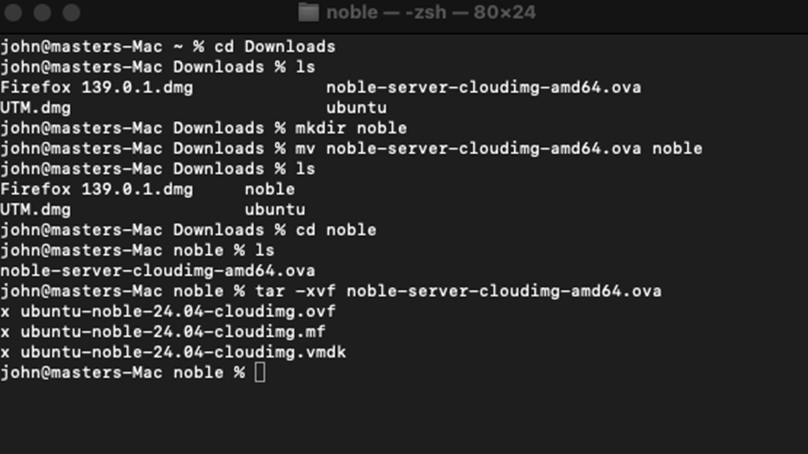

üñ•Ô∏è
UTM Installation Steps
-
Visit the official UTM website: https://mac.getutm.app
-
Download the UTM app.
-
Install UTM by dragging it to your Applications folder.
üîÑ
Converting OVA File to VMDK File
-
Download the OVA file
-
It will typically be saved in your Downloads folder.
-
Create a folder in Downloads and move the downloaded file to the newly created folder
-
Open the Terminal from your Applications
-
Use the command
tar -xvf <filename>.ova→ basically extracting OVA formattar -xvf <filename>.ova -
After extraction you should get these 3 files with extensions of <filename>.ovf, <filename>-disk01.vmdk & <filename>.mf → Note .vmdk file is important

Terminal extraction command reference
Note: Sometimes this VMDK version is not working, then please try to convert VMDK to qcow2 format
üîß
Converting OVA to qcow2 File
-
Download the File OVA file
-
It will typically be saved in your Downloads folder.
-
Create a Folder in Downloads and Move the Downloaded file to Newly created folder
-
Open the Terminal from your applications
-
Use the cmd
tar -xvf <filename>.ova→ basically extracting ova formattar -xvf <filename>.ova -
After Extraction you should get these 3 files with extensions of <filename>.ovf, <filename>-disk01.vmdk & <filename>.mf → Note .vmdk File is importantTerminal extraction for qcow2
-
Use this command
qemu-img convert -f vmdk -O qcow2 ubuntu-noble-24.04-cloudimg.vmdk ubuntu-noble.qcow2qemu-img convert -f vmdk -O qcow2 ubuntu-noble-24.04-cloudimg.vmdk ubuntu-noble.qcow2Note: Before trying this command, make sure you have installed Brew on your base machine. If Brew is not installed, follow Brew installation steps -
Replace ubuntu-noble-24.04-cloudimg.vmdk with your actual file name, and ubuntu-noble.qcow2 with your output filename.- In my case, the input file was ubuntu-noble-24.04-cloudimg.vmdk and I named the output ubuntu-noble.qcow2. You can choose different names as you wish—just be consistent in commands. qemu-img conversion command
☕
Steps to Install Brew
-
Open https://brew.sh in your browser.
-
Copy and paste the following command into Terminal:
/bin/bash -c "$(curl -fsSL https://raw.githubusercontent.com/Homebrew/install/HEAD/install.sh)"Homebrew installation command
-
Press Enter, then enter your Mac password if prompted.⚠️ If Brew is not found after installation, run:
echo 'eval "$(/opt/homebrew/bin/brew shellenv)"' >> /Users/your_username/.zprofileeval "$(/opt/homebrew/bin/brew shellenv)" -
brew install qemuThis installs qemu, which is needed for converting VMDK to qcow2 format.Installing qemu via brew
üì•
Importing VMDK or qcow2 to UTM Software
-
Now open the UTM Software
-
Click on Create a New Virtual MachineUTM create new VM
-
Select Emulate optionSelect emulate option
-
Select Other optionSelect other option
-
Under the Hardware option for machine, select (Intel ICH9 based PC). After that, specify how much memory (RAM) you need to assign for that virtual machine. Note: You need to mention in MB (1GB = 1024MB). After memory, select the Core (let it be default).Hardware configuration
-
In other options, under boot device select NONE, disable UEFI Boot, and click on Next.Boot device configuration
-
In storage, just specify 2GBStorage configuration
-
In shared directory, just click on Continue
 Shared directory option
Shared directory option
-
Now in summary, name the machine as you wish and click on SaveVM summary and save
-
Now select that machine you have created → right-click → click on EditEdit VM settings
-
Now scroll down under Devices section. Remove the existing IDE Drive. After removing the existing IDE drive → click on New option → select the Import option → select the extracted VMDK file.Image Reference: images/5/10.png
Import VMDK file -
Once all the steps are done properly, close the settings tab & start the machine. You are good to go!
üßπ
Clean Up (Optional)
-
After the conversion is complete
-
Delete the original .ova and .ovf, .mf files.
-
✅ Keep the .vmdk & .qcow2 file.
✅
Conclusion
You have successfully learned how to import OVA (Open Virtual Appliance) files and prebuilt virtual machines into UTM on Mac. By following these steps, you can now:
- ✓ Extract .ova files to get .vmdk disk images
- ✓ Convert VMDK to qcow2 format using qemu-img
- ✓ Configure and import virtual machines into UTM effortlessly
- ✓ Run any prebuilt virtual machine on your Mac without compatibility issues
⚠️ Important Note: These steps are specifically designed for OVA files and prebuilt virtual machines. For ISO installation, please do not follow these steps as a separate comprehensive guide will be provided soon. ISO installation requires a different approach and will be updated with detailed instructions.
üí° Tip: If you encounter any issues during the import process, refer back to the relevant section or try the alternative conversion method (VMDK to qcow2) for better compatibility.